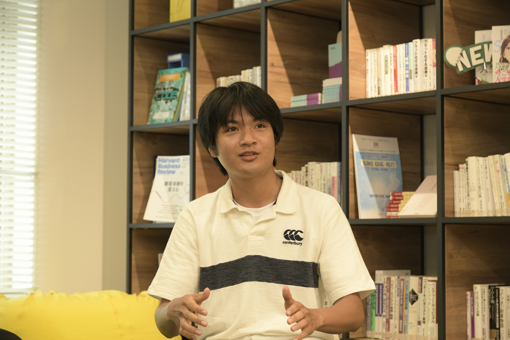

RESEARCH
数理生物学・学術研究
ヒトが集団内で維持してきた過度な不安や抑うつといった心理特性の適応的意義について、ゲーム理論や地域間環境格差、季節変動を取り入れた数理モデルを通じて理論的に解析しています。
PREPRINT
Jxiv (JST) 2024
Anxiety-causing alleles may confer evolutionary advantages not in very dangerous but in moderately stressful environments
概要 / Abstract
ヒトの情動的苦痛や不安感受性遺伝子がなぜ集団内で淘汰されずに維持されてきたのかを数理モデルによって検証。解析の結果、不安を引き起こすアレルは極めて危険な環境ではなく、中程度のストレス環境（適度なリスク環境）において選択有利になり得ることが示されました。

九州大学 図書館書架にて
CONFERENCE PRESENTATIONS 学術学会発表
2025
-
国際口頭
"Anxiety-causing alleles are favored in moderately stressful environments" Annual Meeting of the Society for Mathematical Biology (国際数理生物学会)
-
口頭発表
「季節性情動障害に関連するセロトニントランスポータ結合パタンの季節変動」 理論進化生態フォーラム
2024
-
ポスター
「うつ関連遺伝子アレル頻度の地理的勾配を生み出した地域間環境格差に関する数理モデル：東アジアは過酷だったか？ユートピアだったか？」 第17回 日本人間行動進化学会年次大会
-
口頭発表
「うつ関連遺伝子の進化モデル」 日本数理生物学会 年次大会
-
口頭発表
「うつ病関連遺伝子の進化モデル：5-HTT遺伝子多型の維持メカニズムの解明」 理論生物学若手の会
-
口頭発表
「うつ関連遺伝子の進化モデル」 ゲーム理論ワークショップ
2023
-
口頭発表
「うつ病関連遺伝子の進化モデル」 日本数理生物学会 年次大会
-
ポスター
"Model for the evolution of depression-related genes" 理論生物学若手の会
AFFILIATIONS 所属学会
- 日本数理生物学会（JSMB）
- 日本人間行動進化学会（HBES-J）